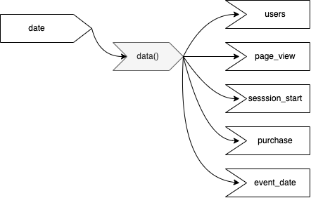

select
event_date,
event_name,
COUNT(*) as event_count
from `bq-project-id.ga4_obfuscated_sample_ecommerce.events_*`
where
event_name in ('page_view', 'session_start', 'purchase')
and _TABLE_SUFFIX between '20201101' and '20211231'
group by 1, 2; Shiny summary tiles
shiny
Building custom metric summary tiles for Shiny.
Effective reporting tools include user interface (UI) elements to quickly and effectively communicate summary metrics. Shiny, a free software package written in the R statistical computing language, provides several tools to communicate analysis and insights. Combining several of these elements together, a developer can create user interface elements that clearly communicate important summary metrics (e.g., Key Performance Indicators) to an application’s users.
This post details the steps to create the following simple Shiny application. Specifically, this post overviews the use of Shiny’s built-in functions to create simple summary metric tiles. In addition, this post describes how to add styling to UI elements by applying custom css to a Shiny application.
Post objectives
This post aims to:
- Overview steps to create summary metric UI elements in a Shiny application.
- Overview the process of applying custom CSS to UI elements in a Shiny application.
The data used
This tutorial utilizes Google Analytics 4 data from the Google Merchandise store. This data is provided through Google’s Public Datasets initiative, and it can be accessed and used by anyone (as long as you have a Google account). The data was obtained by passing a SQL like query to an analytics data warehouse solution called BigQuery. This data represents web site activity, specifically site events from 2020-11-01 to 2021-12-31. More about the data can be found here.
The following code chunks contain the SQL queries used to export the data. These queries were adapted from Google Analytics BigQuery’s documentation. An example file using R code to export the data can be found here. To use this code, the bq-project-id in the from statement needs to be replaced. Otherwise, these queries won’t work until this modification is made.
select
event_date,
count(distinct(user_pseudo_id)) as users
from
`bq-project-id.ga4_obfuscated_sample_ecommerce.events_*`
where
_TABLE_SUFFIX between '20201101' and '20211231'
group by event_date
order by event_date; A connection between a Shiny app and BigQuery can be established, and requests containing SQL queries can be passed along using this connection. For simplicity and reproducibility of the example app described in this post, I opted not to discuss this set up. The example code linked above details one method that utilizes the bigrquery package to make a connection and pass queries to BigQuery.
Once exported, the data were tidied and joined using a dplyr::left_join() on the event_date column. The joined data was then written locally into one .csv file, ga4_data.csv. The process used to export and tidy the data can be found in this GitHub repository.
The data represents daily summaries for four metrics:
users(i.e., the number of users who visited the Google Merchandise store that day)page_view(i.e., the number of Google Merchandise store page views by users for that day)session_start(i.e., the number of sessions started by specific users for that day)purchase(i.e., the number of purchases made during that day)
App functionality
The goals for this app are simple:
- Provide users individual summary metrics for the most up-to-date data.
- Build in functionality to display summary metrics for previous dates.
- Provide some element to inform the user on the date represented by the summary metrics.
Given the functionality requirements, one input element is needed in the UI–a date selected by the user. In addition, since no user input will be provided during the initialization of the app, the date input needs to default to the most recent data.
As for outputs, the UI will display the four metrics within the data. Moreover, since the app provides users functionality to select a date to modify the displayed data, the app will need to include some output informing the user about what date is being represented in the summary metric tiles.
The reactive graph
Although this app is simple and most of the elements can be easily managed, it’s always good practice to see the big picture of the app by plotting out a reactive graph first. It’s also good to have the intended reactive graph available as a quick reference, just in case unexpected results and/or behaviors are displayed while developing the application, and as a method for identifying any situations where computing resources are not being used efficiently.
Below is the reactive graph for the application to be developed:

Again, a really simple application–one input (date), a reactive expression (data()), and five outputs (users; page_view; session_start; purchase; and event_date). The graph also details the dependencies clearly, where the outputs are dependent on the reactive data() object–which in cohort with the outputs–depends on the date input.
General approach to application development
When it comes to Shiny development, I take the approach of getting the app to work first. Then, I switch my focus towards optimization. My goal in the following sections is to just get the app working, and then I will focus on refining the code to make it more efficient and eloquent. Thus, the first iteration of the app will contain a lot of repeated, redundant code. However, subsequent iterations will apply functions and functional programming principles to eliminate this repetition.
At this point in the post, the focus will be on discussing each section of the application and how each section is set up to meet the functionality requirements.
Creating the summary tiles for the user interface
Taking a zoomed out view, the app will be composed of four sections: 1. setup; 2. data import; 3. UI; and 4. server.
The setup
The first step is to import the R packages used within the application. The following code chunk contains the packages used for the application. A brief description of each is included.
library(shiny) # The Shiny app library
library(readr) # Import data
library(dplyr) # Pipe and data manipulation
library(tidyr) # Tidying data function
library(purrr) # Used for functional programming
library(glue) # Used for string interpolationMany of these packages are part of the tidyverse, and thus the import could be simplified to just running library(tidyverse). Be aware this may bring in unused, unneeded libraries. There is nothing wrong with this approach. However, I opted to be more verbose with this example, so as to be clear about what libraries are utilized within the example application and to have more control on what packages were imported by the application.
Data import
Since the data has already been exported and is stored as a .csv file, the app utilizes readr::read_csv() to import the data upon app initialization. During the import, the col_types argument is passed a list of variable parsing functions. Specifically, GA4 data represents dates in a numeric format. Thus on import, this function will parse the imported column into a date type variable.
ga4_data <- read_csv(
"ga4_data.csv",
col_types = list(event_date = col_date("%Y%m%d"))
)This chunk of code follows the library imports, and it makes the data object ga4_data available within the global environment when the application is running. This object will then be later used in the server side of the application, which will be discussed later in the post.
The UI side of the summary metric tiles
Application layout
The next step is to code the layout of the UI. To keep the design simple, a sidebar will contain the application’s inputs, while the outputs will be placed within the main panel of the application. The general skeleton of the layout looks like this:
ui <- fluidPage(
# Inputs
sidebarLayout(
sidebarPanel()
),
# Outputs
mainPanel(
# Summary tiles
fluidRow(),
br(),
# Data information output
fluidRow()
)
)There’s nothing too fancy about this code, outside of it establishing the general layout of the application, so not much else will be said about what each element does here. However, Chapter 6 of Mastering Shiny discusses application layout if a more detailed description is needed.
The date input
The app requirements state users need to have the ability to modify the dates to which the data represents, and the summary metric tiles will change based on this user input. However, the app will not have any user input upon startup, so it needs to default to the most recent date within the data. To meet these requirements, we use the following code:
# Code excluded for brevity
ui <- fluidPage(
sidebarLayout(
sidebarPanel(
dateInput("date",
"Select a date for summary:",
value = max(ga4_data$event_date),
max = max(ga4_data$event_date),
min = min(ga4_data$event_date)
)
)The shiny:dateInput() function is used to create the HTML for the input, which resides in the application’s sidebar. The function’s id argument is given the value of date, which will establish a connection to elements within the server. More on this later. Then, a string value of Select a date for summary: is passed along to the label argument. This value will be displayed above the date input in the UI.
Since the app won’t have an initial user input upon the startup of the application, max(ga4_date$event_date) is passed along to the value argument. This will default the input to the most recent date within the data. In addition, the functions max and min arguments are passed similar calls. However, in the case of the min argument the base R min() function is used on the ga4_data$event_date.
First iteration of the summary metric tiles
The server side
The reactive data() object
Before the summary metrics can be displayed in the UI, the application needs data to create the outputs. In addition, since this data will be dependent on users’ input (i.e., the user can select a new date which subsequently changes the summary metric tile), this object needs to be reactive. To do this, the following code is added to the server side of the application.
server <- function(input, output, session) {
data <- reactive({
ga4_data %>% filter(.data[["event_data"]] == input$date)
})
}In practical terms, this code just filters the data for the date being passed along as the input$date object.
Again, this object could be the most recent date within the data, the date set by the max argument in the dateInput() function, or it could be based on a user’s modification of the date input. Since this code was wrapped inside of the reactive({}) function, Shiny will be listening for any changes made to the to the input$date object. Any changes that occur will result in the data() reactive expression to be modified, followed by new output values being displayed via the UI.
One other key concept is being exhibited here, tidy evaluation, specifically data-masking. Since technically dplyr::filter() is being used inside of a function, an explicit reference to the data is required. Thus, .data[["event_data"]] notation is used to make it explicit on what data will be filtered. The specifics on how to use data-masking in the context of a Shiny app is beyond the scope of this post. However, the previously linked materials provide a more detailed description of these concepts.
The outputs
Looking back at the reactive graph, the application requires five outputs to be in the server. These outputs will just be simple text outputs, so the use of the shiny::renderText() function will be sufficient to meet our requirements. The format() function is also applied to comma format any outputs that contain numbers (e.g., 2,576 vs 2576). Here is what the server looks like currently:
server <- function(input, output, session) {
data <- reactive({
filter(ga4_date, .data[["event_date"]] == input$date)
})
output$users <- renderText(format(data()$users, big.mark = ','))
output$page_view <- renderText(format(data()$page_view, big.mark = ','))
output$session_start <- renderText(format(data()$session_start, big.mark = ','))
output$purchase <- renderText(format(data()$purchase, big.mark = ','))
output$date <- renderText(glue("Estimates represent data from {data()$event_date}"))
}As part of the functionality requirements, the app needed some UI element informing users what date is being represented in the summary tiles. The output$date object was included to meet this requirement. The output$date object, aside from using the renderText() function, includes the use of the glue::glue() function to make the outputted message more informative.
The {glue} package is used to manipulate string literals with the use of the curly braces (e.g., {}). When applied here, the {data()$event_date} is evaluated as an R call, its value becomes appended to the string, and the whole string is then outputted to the application’s UI.
Back to the UI
Now that there are five elements being outputted from the server, UI elements need to be included to display the rendered outputs.
When making early design decisions about the application’s layout, it was decided these elements were going to reside within the main panel of the application. Another decision made was to keep the summary metric tile elements on the same row, so as to seem as though they are related to one another (i.e., related KPIs). As for the UI element informing the user on the date the summary metric tiles represent, it was decided that this element would be placed on its own row.
To achieve the intended design, additional Shiny layout functions were applied to the application’s code. This includes using the fluidRow() and column() functions to achieve the wanted UI organization. The following code was used to achieve the placement of the summary tiles within the application’s layout:
mainPanel(
fluidRow(
column(),
column(),
column()
),
br(),
fluidRow()
)As for the design of the summary metric tiles, each tile needed to include some type of title followed by the text representing the metric. To achieve this, the shiny::div() function was used. This function creates an individual HTML tag that outputs the text being passed along into the function. Directly below the title element, the textOutput() function is used to display the outputs coming from the application’s server. The code for one summary metric tile would look like the following:
column(3,
div("Unique Users"),
textOutput("users")
)By combining these elements, the application code in its current state can be seen here:
# Setup -------------------------------------------------------------------
library(shiny)
library(readr)
library(dplyr)
library(tidyr)
library(glue)
library(purrr)
# Import data -------------------------------------------------------------
ga4_data <- read_csv(
"ga4_data.csv",
col_types = list(event_date = col_date("%Y%m%d"))
)
# UI ----------------------------------------------------------------------
ui <- fluidPage(
sidebarLayout(
sidebarPanel(
dateInput("date",
"Select a date for summary:",
value = max(ga4_data$event_date),
max = max(ga4_data$event_date),
min = min(ga4_data$event_date)
)
),
mainPanel(
fluidRow(
h2("Summary report"),
column(3,
div("Users"),
textOutput("users")
),
column(3,
div("Page Views"),
textOutput("page_view")
),
column(3,
div("Session Starts"),
textOutput("session_start")
),
column(3,
div("Purchases"),
textOutput("purchase")
)
),
br(),
fluidRow(
textOutput("date")
)
)
)
)
# Server ------------------------------------------------------------------
server <- function(input, output, session) {
data <- reactive({
filter(ga4_data, .data[["event_date"]] == input$date)
})
# Text output
output$users <- renderText(format(data()$users, big.mark = ','))
output$page_view <- renderText(format(data()$page_view, big.mark = ','))
output$session_start <- renderText(format(data()$session_start, big.mark = ','))
output$purchase <- renderText(format(data()$purchase, big.mark = ','))
output$date <- renderText(glue("Estimates represent data from {data()$event_date}"))
}
shinyApp(ui, server)Indeed, this code works and meets the functionality requirements. However, it’s quite verbose and contains a lot of redundant, repeated code. Different techniques could be applied to make the application more eloquent and efficient in its design. The goal of the next few sections, then, will be to simplify the application through the development of functions and applying functional programming principles.
Simplifying the outputs
Reviewing the server, most of the outputs are created through the use of repeated patterns of the same code. This breaks the DRY principle (Don’t Repeat Yourself) of software development. Both functions and the application of functional programming principles will be applied to address this issue.
An obvious pattern used to create the outputs is output$foo <- renderText(format(bar, big.mark = ',')). This pattern could be converted into a function, and then this function could be used to iterate over the several reactive objects (e.g., data()$users) with the use of a {purrr} function. Since the side-effects are intended to be used rather than outputting a list object from our iteration, purrr::walk() will do the trick.
Utilizing this strategy simplifies our code to the following:
c('users', 'page_view', 'session_start', 'purchase') %>%
walk(~{output[[.x]] <- renderText(format(data()[[.x]], big.mark = ','))})Indeed, I can’t take full credit for this solution. Thanks goes to @Kent Johnson in the R4DS Slack channel for helping me out.
The output$date object was left out of this simplification of the code. Certainly, the function could be made to be more general and flexible to handle this repetition of the renderText() function. However, this would be over engineering a solution to the problem.
Back to the UI
Functions and functional programming principles will now be used to address these same issues on the UI side of the application. Much of the repetition occurs with the use of the following pattern:
column(3,
div("Metric Title"),
textOutput("metric_output")
)Indeed, this pattern is applied four times. Since it was copied and pasted more than twice and breaks the DRY principle, it would be best to convert it into a function and iterate it using functional programming tools.
Simplifying the UI with functional programming
A helper function, make_summary_tile(), is added to the setup section of the application. The function looks like this:
make_summary_tile <- function(title, text_output){
column(2,
div(title),
textOutput(text_output)
)
}There’s nothing too fancy or complicated about this function. It simply generalizes the pattern applied within the UI side of the first iteration of our application. As for placement, this function could be defined at the top of the application file or in a separate .R file embedded in a R/ sub-folder. Both strategies would make the function available for the app. Deciding which to use comes down to the intended organizational structure of the application.
The next step is to apply functional programming to iterate the make_summary_tile() function over the text outputs. Since the function requires two inputs, title and text_output, they were placed inside of a tibble to improve organization of the inputs being passed to the function through pmap().
# Defined in the Setup section
tiles <- tribble(
~header , ~text_output,
"Users" , "users",
"Page Views" , "page_view",
"Session Starts", "session_start",
"Purchases" , "purchase"
)
# Used within the UI
pmap(tiles, make_summary_tile)What once required sixteen line’s of code was cut in half to eight (including the explicit definition of the inputs). In addition, coding the tiles using functional programming also makes it more flexible, where summary tiles could be easily added or taken away.
Doing this would require some slight modification to the make_summary_tile() helper function, though. That is, a width argument would need to be added to the function, so the column width could be set to accommodate the number of outputs for the UI. There are lots of different options that could be explored here. At this point, though, the solution meets the functionality requirements.
In its current state, the application code looks like this:
# Setup -------------------------------------------------------------------
library(shiny)
library(readr)
library(dplyr)
library(tidyr)
library(glue)
library(purrr)
make_summary_tile <- function(header, text_output){
column(2,
div(header),
textOutput(text_output)
)
}
tiles <- tribble(
~header , ~text_output,
"Users" , "users",
"Page Views" , "page_view",
"Session Starts", "session_start",
"Purchases" , "purchase"
)
# Import data -------------------------------------------------------------
ga4_data <- read_csv(
"ga4_data.csv",
col_types = list(event_date = col_date("%Y%m%d"))
)
# UI ----------------------------------------------------------------------
ui <- fluidPage(
sidebarLayout(
sidebarPanel(
dateInput("date",
"Select a date for summary:",
value = max(ga4_data$event_date),
max = max(ga4_data$event_date),
min = min(ga4_data$event_date)
)
),
mainPanel(
fluidRow(
h2("Summary report"),
pmap(tiles, make_summary_tile)
),
br(),
fluidRow(
textOutput("date")
)
)
)
)
# Server ------------------------------------------------------------------
server <- function(input, output, session) {
data <- reactive({
filter(ga4_data, .data[["event_date"]] == input$date)
})
c('users', 'page_view', 'session_start', 'purchase') %>%
walk(~{output[[.x]] <- renderText(format(data()[[.x]], big.mark = ','))})
output$date <- renderText(glue("Estimates represent data from {data()$event_date}"))
}
shinyApp(ui, server)The application works, meets the functionality requirements, and now is written in a way that reduces repetition and redundant patterns within the code. However, the summary metric tiles just blend into the UI, and nothing about the styling communicates they contain important information.
Since these elements are meant to highlight key, important summary metrics, they need to be styled in a way that creates contrast between themselves and the application’s background. The next section focuses on applying custom CSS to give some contrast between these elements and the application’s background.
Adding custom CSS to the summary metric tiles
There are many methods for adding custom CSS to a Shiny application. Shiny’s documentation overviews many of these techniques in detail. Accordingly, a through overview of these methods is beyond the focus of this post and won’t be further discussed. Rather, this post will overview the application of just one method–creating a separate CSS file and applying style elements within the code.
Creating the www folder and CSS file
Since the design opted for a file-based CSS approach, a separate www sub-folder in the application’s main project directory needs to be created. Once created, the custom CSS file will be placed inside this folder. The placement of this file can be seen in this Github repo.
The purpose of this folder is to make the file available to the web browser when the application starts. Placement of this file is critical. If it is not placed in the www sub-folder, then the CSS file will not be available when the application starts, and any custom styling will not be applied.
Once the www sub-folder is created, you can create a CSS file for the application in Rstudio by clicking File, hovering over New File, and selecting CSS File. Save the file in the www sub-folder and give it an informative name. In the case of this example, the file is named app-styling.css.
The main goal of the styling will be to create some contrast between the summary metric tiles and the application’s background. Specifically, CSS will be used to create a container that is a different color from the application’s background and includes some shading to make it seem like the element is hovering above the application’s main page. To do this, the app-styling.css file includes the following:
#summary-tile{
font-size: 25px;
color:White;
text-align: center;
margin: 10px;
padding: 5px;
background-color: #0A145A;
border-radius: 15px;
box-shadow: 0 5px 20px 0 rgba(0,0,0, .25);
transition: transform 300ms;
}A detailed description on how to create CSS selectors is outside the scope of this post. However, in general terms, this selector sets several values for multiple CSS properties by defining the id, #summary-tile within the file. More about this process of creating different CSS selectors can be found here.
Now it’s just a matter of modifying the code to call this file and pass these style values to the summary tiles within the application. The following code is added to the ui side of our application to include our app-styling.css file:
tags$head(tags$link(rel = "stylesheet", type = "text/css", href = "app-styling.css"))Since the styling is being applied to the summary metric tiles, the make_summary_tile() function is modified to bring in the CSS elements. A css_id argument is added to the function.
make_summary_tile <- function(header, text_output, css_id){
column(2,
div(header),
textOutput(text_output),
id = css_id
)
}Now that we made this modification to the make_summary_tile(), its application in the UI is also modified. Specifically, the #summary-tile CSS element is explicitly called in pmap(). To do this, the code is modified like this:
pmap(tiles, ~make_summary_tile(
header = ..1, text_output = ..2, css_id = "summary-tile"))The header, text_output, and css_id arguments are now explicitly defined in the pmap() call. To refer to the first two elements in the tiles data object, the ..1 (i.e., header column) and the ..2 (i.e., text_output column) are used. Check out the pmap() docs on how to apply the ..1, ..2 (?pmap) for more information.
Wrap up
Putting this all together yields this simple application. Here’s the code in its entirety:
# Setup -------------------------------------------------------------------
library(shiny)
library(readr)
library(dplyr)
library(tidyr)
library(glue)
library(purrr)
make_summary_tile <- function(header, text_output, css_id){
column(2,
div(header),
textOutput(text_output),
id = css_id
)
}
tiles <- tribble(
~header , ~text_output,
"Users" , "users",
"Page Views" , "page_view",
"Session Starts", "session_start",
"Purchases" , "purchase"
)
# Import data -------------------------------------------------------------
ga4_data <- read_csv(
"data/ga4_data.csv",
col_types = list(event_date = col_date("%Y%m%d"))
)
# UI ----------------------------------------------------------------------
ui <- fluidPage(
tags$head(
tags$link(rel = "stylesheet", type = "text/css", href = "app-styling.css")
),
sidebarLayout(
sidebarPanel(
dateInput("date",
"Select a date for summary:",
value = max(ga4_data$event_date),
max = max(ga4_data$event_date),
min = min(ga4_data$event_date)
)
),
mainPanel(
fluidRow(
h2("Summary report"),
pmap(tiles, ~make_summary_tile(
header = ..1, text_output = ..2, css_id = "summary-tile"))
),
br(),
fluidRow(
textOutput("date")
)
)
)
)
# Server ------------------------------------------------------------------
server <- function(input, output, session) {
data <- reactive({
filter(ga4_data, .data[["event_date"]] == input$date)
})
c('users', 'page_view', 'session_start', 'purchase') %>%
walk(~{output[[.x]] <- renderText(format(data()[[.x]], big.mark = ','))})
output$date <- renderText(glue("Estimates represent data from {data()$event_date}"))
}
shinyApp(ui, server)To recap what was accomplished by this post, the application meets all the functionality requirements in a simplified, manageable way:
Create summary metric tile UI elements in a Shiny application.
Provide functionality for users to modify the date the data represents.
Include a UI element that informs the user on what date is being represented in the summary metric tiles.
Apply custom CSS to the UI elements to draw a contrast between the app and the summary metric tiles.
More could be done to improve this code. For instance, some of these elements could be moved to their own .R files and placed into separate directories following a R package organizational structure. Moreover, more could be done to modularize the code, so it could be easily applied in other applications. These are all topics for potential future posts.
Although the app development involved multiple iterations to meet the initial requirements, this post highlights one method to create summary metric tiles that can be used as another tool to effectively and efficiently communicate summary metrics to users, a goal every data tool developer strives to meet.
If you found this post useful, please pass it along to others. If you have other methods or ways to optimize this solution, please reach out to me.
Resource links
A running example of the application can be found here
The repo containing the application’s code can be found here
The code to export the Google Analytics 4 data for the Google Merchandise store can be found here
Mastering Shiny by Hadley Wickham
Outstanding User Interfaces with Shiny by David Granjon
R for Data Science by Hadley Wickham and Garrett Grolemund